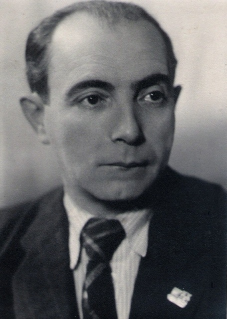

 Аршанский Эдуард Львович Arshanski Eduard Аршанскі Эдуард Львовіч
(25 августа 1899, Невель, Витебская губерния — 6 июля 1974, Ленинград) — белорусский советский режиссёр, сценарист. Театральный режиссер в 1917—1927 и в 1941—1949 годах. В 1919—1920 руководил передвижными театральными труппами на фронтах Гражданской войны. В 1917—1927 работал в театрах Ленинграда, в рабочих клубах в Витебске. (August 25, 1899, Nevel, Vitebsk Province - July 6, 1974, Leningrad) - Belarusian Soviet director, screenwriter. Theater director in 1917-1927 and 1941-1949. In 1919-1920 led the mobile theater troupe on the fronts of the Civil War. In 1917–1927, he worked in theaters in Leningrad, in workers' clubs in Vitebsk. (25 жніўня 1899, Невель, Віцебская губерня - 6 ліпеня 1974, Ленінград) - беларускі савецкі рэжысёр, сценарист. Тэатральный рэжысёр у 1917-1927 і ў 1941-1949 гадах. У 1919-1920 кіраваў перасоўнымі тэатральнымі трупамі на франтах Грамадзянскай вайны. У 1917-1927 працаваў у тэатрах Ленінграда, у працоўных клубах у Віцебску.
Список работ: List of Works: Списак работ:
- 1930 «Переправа вплавь» (военно-учебный фильм) "Crossing the water" (military educational film) «Пераправа ўплаў» (ваенна-навучальны фільм)
- 1931 «Кто лучше?» (короткометражный) "Who is better?" (Short) «Хто лепш?» (Кароткаметражны)
- 1932 «Боям навстречу» "Fighting towards" «Баям насустрач»
- 1933 «Дважды рождённый» "Twice Born" «Двойчы народжаны»
- 1935 «Новая Родина» "New Motherland" «Новая Радзіма»
- 1937 «Соловей» (по одноименной повести З. Бядули) "The Nightingale" (based on the story of the same name by Z. Byadulya) «Салавей» (па аднайменнай аповесці З. Бядулі)
- 1951 «Виноград» (документальный) "Grapes" (documentary) «Вінаград» (дакументальны)
- 1953 «Павел Судников» (документальный) "Pavel Sudnikov" (documentary) «Павел Суднік» (дакументальны)
- 1955 «По новым путям» (документальный) “On New Ways” (documentary) «Па новых шляхах» (дакументальны)
- 1957 «Человек, опередивший время» (документальный) “A Man Beyond the Time” (documentary) «Чалавек, які апярэдзіў час» (дакументальны)
- 1960 «Спортивная юность» (документальный) "Sporting youth" (documentary) «Спартыўная юнацтва» (дакументальны)
- 1962 «Возвращение в жизнь» (документальный) "Return to life" (documentary) «Вяртанне ў жыццё» (дакументальны)

{kind=link}